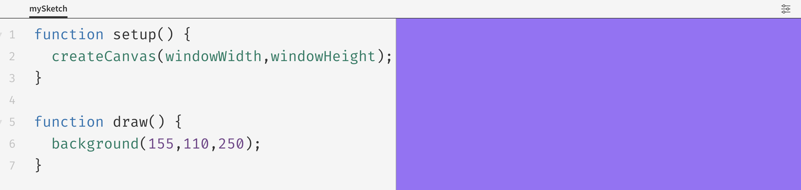

Canvas in Browser
A place in browser to draw graphics.
For drawing the canvas, the function createCanvas(width, height) is used in the function setup().
Width and height of the canvas can be same or different. for e.g.
createCanvas(400, 400);
createCanvas(300, 600);
It can be the same width and height as of the browser window. for e.g.
createCanvas(windowWidth, windowHeight);
In Canvas the origin is at the top left corner and the coordinates are indicated relative to the origin. For the background of the canvas ,the function background(colour)
* Monochrome - between black(0)and white(255)
background(220);
* Colour in RGB (red, green, blue)
Each of the three colours have a range from 0-255(r = 0-255, g = 0-255, b = 0-255)
background(155,110,250)
